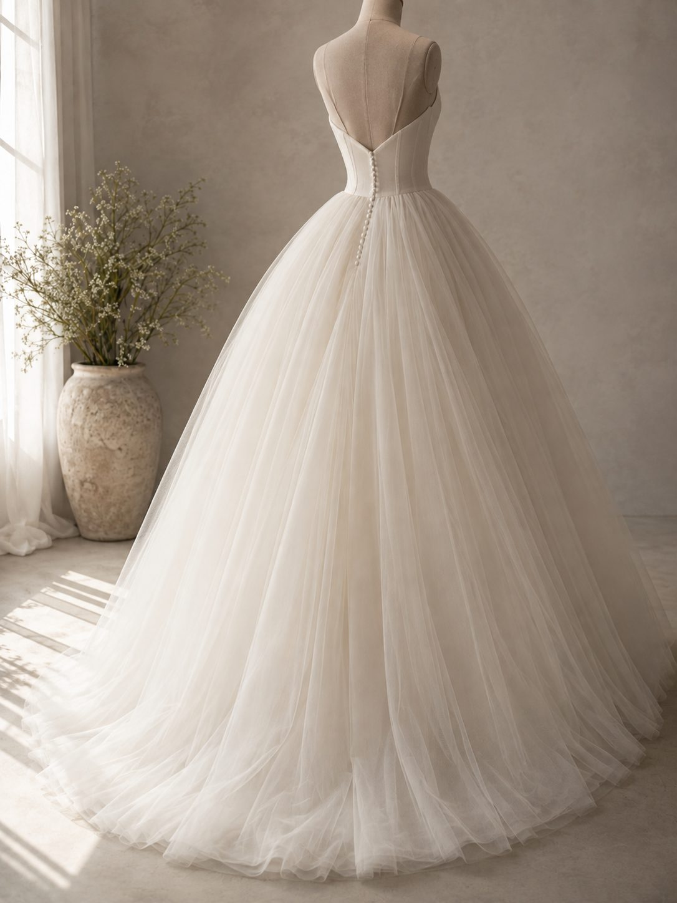

PRINCESS
ウエストから下は、
完全に隠れる。
5つのシルエットの中で、体型が最も出ないドレスです。だからこそ準備の対象が明確に絞れます。

先に結論です。顔まわり、デコルテ、肩、二の腕。この4つだけです。お腹も腰も脚も、スカートのボリュームが完全に隠します。ここに時間と費用をかけても写真には出ません。
プリンセスラインで出る部位
| 部位 | 出るか | 対策 |
|---|---|---|
| 顔まわり | 最も出る | むくみと肌の状態。睡眠が最優先 |
| デコルテ | 出る | 落とさない。姿勢で見え方が変わります |
| 肩 | 出る | 巻き肩を直すと形が変わります |
| 二の腕 | 出る（袖なしなら） | 後ろ側を使う。3ヶ月で変わります |
| ウエスト | 締まって見える | コルセットが補正します。優先度は低い |
| お腹・腰・脚 | 完全に隠れる | 対策不要 |
顔まわりが主役になる
スカートのボリュームが大きいぶん、視線は自然に上へ集まります。プリンセスラインは顔の状態がそのまま印象になるドレスです。体重を落とすより、肌とむくみに手をかけたほうが写真は良くなります。
特に効くのが睡眠です。準備で最初に削られる部分で、そして顔に最も出ます。1時間早く寝るほうが高価な美容液より結果が出ます。
デコルテは落とさない
コルセットタイプのボディスが多いので、胸元から上が見えます。ここで起きがちな失敗が、体重を落としてデコルテが薄くなることです。骨が浮くと、痩せたというより疲れて見えます。
効くのは姿勢です。肩が前に入っているとデコルテが埋まり、鎖骨のラインが消えます。費用をかけずに改善できる部分なので、まずここから。
巻き肩の直し方は巻き肩のページにまとめています。
二の腕と背中
袖のないデザインなら二の腕が出ます。背中の開き方はデザインで変わるので、試着したときに後ろ姿の写真を撮ってください。自分では絶対に見えない角度です。

やらなくていいこと
- 下半身のトレーニング。完全に隠れます。時間を上半身と顔に回してください
- 脚のむくみ対策。見えません。顔のむくみだけ考えれば足ります
- お腹を凹ませる努力。スカートのボリュームが隠します
- 全身のエステコース。見えない部位が含まれます。デコルテと二の腕に絞れば費用は下がります
費用の配分については予算の考え方に。
注意点
ドレスそのものが重いので、当日は思ったより疲れます。長時間立ち続けることになるため、直前に極端な食事制限をすると体力が持ちません。朝食を抜くのも避けてください。
前日と当日の食事は前日の食事にまとめています。
次に読む